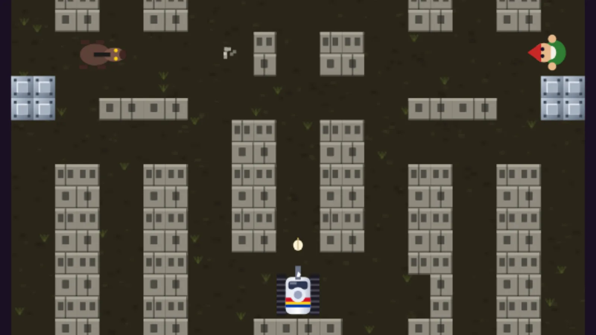

Bantay Kubo
Battle City, Pinoy style

ArcadeKeyboard · TouchFree, in the browser
Play Bantay KuboAbout the game
Bantay means guard, and the kubo is the bahay kubo, the little bamboo house on stilts with a roof of nipa palm. In every barangay of this game, an army of Filipino folklore creatures is coming for it. You drive a chrome jeepney that has been turned into a tank, with a bronze lantaka (a small old-style cannon) on the hood, and it fires glowing garlic.
It is built on the tank battles of the old arcade era: a board seen from above, walls you can shoot through and walls you cannot, and enemies that pour in from the corners. The war runs through ten barangays of the countryside, from San Isidro to the beach, each at its own time of day and introduced by a line from the Kapitan (the village chief).
How to play
Each barangay sends twenty enemies, up to four on the board at a time. Knock them all out to clear it. If the kubo's nipa roof is destroyed, or you run out of jeepneys, the game is over. Your own garlic never hurts the kubo. Knocking out enemies within three seconds of each other earns a combo bonus.
The enemies are all different. The duwende (a small house spirit) is slow and simple, the tikbalang (a horse-headed trickster) runs fast, the aswang shoots fast, the kapre (a tree giant) takes four hits, and the manananggal flies over the rice paddies and takes two. Barangay five ends with the Kapreng Balete, a giant who hovers above the board firing volleys, and barangay ten with the Bakunawa, the moon-eating sea serpent, who gets angrier at half health.
The ground matters. Hollow-block walls break when shot. Bakal (steel plate) stops shots. Nobody can drive through the palayan (rice paddy), and the kawayan (bamboo) groves hide everyone who goes in. Enemies that flash red drop a power-up when hit: Sili (chili) makes your shots faster, then doubled, then strong enough to break steel. Paputok (firecracker) blows up every enemy on screen. Anting-anting (amulet) gives a shield. Pala (shovel) turns the kubo's wall to steel for a while, then leaves it repaired. Siesta puts the army to sleep. Balut gives an extra life, and Lechon is a 1,000-point feast.
- Keyboard: arrow keys or WASD drive, Space, J or Z fires, F toggles auto-fire, P pauses, M toggles sound.
- Phone and tablet: the on-screen D-pad and the big PUTOK! (fire) button. Auto-fire is on by default.
- Controller: D-pad or left stick drives, Cross or A fires, Triangle or Y toggles auto-fire, Options or Start pauses.
Madali (easy), the default, lets the kubo take five hits, gives you four spare jeeps and more power-ups, and the neighbors quickly rebuild the wall. Mahirap (hard) gives two hits, one spare and no help. Each cleared barangay earns up to three stars, and the Mapa lets you replay any you have unlocked.
Tips
- Stay near the kubo early on. Enemies that reach its wall do the real damage, and chasing them across the board leaves it open.
- Shoot the hollow blocks to open lines of fire, but leave the ones right around the kubo standing as long as you can.
- Collect Sili whenever you see it. The third level, which breaks steel, changes how you can attack.
- Deal with the aswang quickly. It shoots faster than anything else on the board.
- Bosses fire in volleys. Duck behind steel while a volley passes, then come out and keep chipping away.
The bahay kubo and its guardians
The bahay kubo is the traditional rural house of the lowland Philippines: a single room raised on stilts, walls of bamboo or woven sawali, and a steep roof of nipa or cogon. Raising it kept it dry in the rainy season and let air flow underneath. Most Filipinos know it from the folk song "Bahay Kubo", which lists the vegetables growing around the little house, usually from early childhood.
The creatures attacking it all come from Philippine folklore, where the countryside after dark belongs to beings you should not disturb. Garlic is the classic protection against the aswang in those old stories, which is why the jeepney fires it, and an anting-anting was the amulet people carried for luck and safety.
The lantaka on the hood is a real piece of history too. These bronze swivel guns were mounted on boats and forts across the islands of Southeast Asia, long before and during the Spanish period. Putting one on a jeepney is the game's own idea.